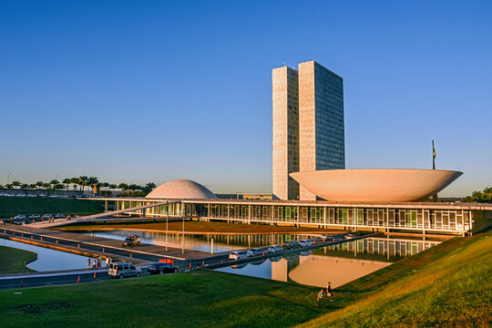
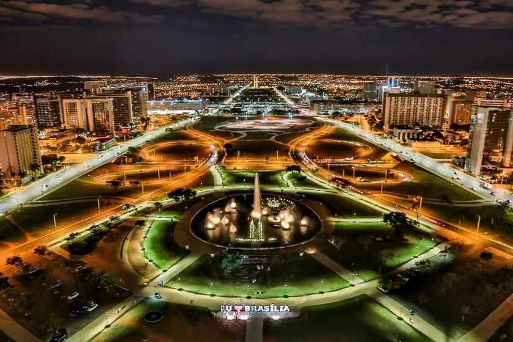

Arquitetura Monumental: Uma das maiores riquezas de Brasília é sua arquitetura monumental e futurista. Projetada por Niemeyer, a cidade é pontuada por edifícios icônicos como o Congresso Nacional, o Palácio da Alvorada e a Catedral Metropolitana, que são verdadeiras obras de arte arquitetônica.
Poder Político e Administrativo: Como capital do Brasil, Brasília é o centro do poder político e administrativo do país. Abriga os principais órgãos governamentais, como o Palácio do Planalto, sede da Presidência da República, e o Supremo Tribunal Federal, consolidando sua importância como centro decisório e institucional.
Cultura e Diversidade: A cidade é rica em diversidade cultural, refletida em sua população cosmopolita e nas manifestações culturais que ocorrem em seus teatros, museus e espaços públicos. O Complexo Cultural da República e o Museu Nacional Honestino Guimarães são exemplos de locais que preservam e promovem a cultura brasileira.
Natureza Preservada: Apesar de ser uma cidade urbanizada, Brasília possui uma abundância de áreas verdes e parques, como o Parque Nacional de Brasília e o Parque da Cidade, que oferecem refúgio e lazer para seus habitantes. Essas áreas preservadas são verdadeiras riquezas naturais dentro da cidade.
Planejamento Urbano: Brasília é reconhecida mundialmente por seu planejamento urbano inovador, com suas avenidas largas, quadras simétricas e setores bem definidos. Esse modelo de urbanismo, concebido por Lúcio Costa, influenciou o desenvolvimento de diversas cidades ao redor do mundo.
Qualidade de Vida: A cidade é conhecida por sua alta qualidade de vida, com boa infraestrutura, serviços públicos eficientes e baixos índices de violência. Esses fatores contribuem para tornar Brasília um local atrativo tanto para moradores quanto para investidores e turistas.
Educação e Pesquisa: Brasília abriga importantes instituições de ensino e pesquisa, como a Universidade de Brasília (UnB) e diversos institutos de pesquisa ligados ao governo federal. Essas instituições desempenham um papel fundamental no desenvolvimento acadêmico, científico e tecnológico do país.
Economia Diversificada: A economia de Brasília é diversificada, com destaque para o setor de serviços, administração pública e tecnologia da informação. A cidade atrai empresas de diversos segmentos devido ao seu ambiente favorável aos negócios e sua localização estratégica no centro do país.
Vida Noturna e Entretenimento: Brasília oferece uma vida noturna pulsante, com uma variedade de bares, restaurantes, casas de show e eventos culturais. O Setor de Clubes Esportivos Sul e o Setor de Diversões Sul são conhecidos por sua agitada vida noturna e opções de entretenimento.
Hospitalidade e Turismo: Como destino turístico, Brasília recebe milhares de visitantes todos os anos, atraídos por sua arquitetura única, sua cultura vibrante e suas belezas naturais. A cidade oferece uma ampla gama de opções de hospedagem, desde hotéis luxuosos até pousadas aconchegantes, garantindo uma estadia confortável e memorável para seus visitantes.
